Premise:
Stryder Arena is a top-down 3D multilayer arena battle game that I coded using C# and the XNA framework for windows and Xbox when I was 18. It supports up to 4-player split screen and has a number of different game modes, weapons, and abilities.Gameplay Video:
Nerd stuff:
The most interesting technical hurdle of this game was all of the rendering systems that I wrote into it. Since I was using XNA, I didn't have a built in lighting engine I could rely on. I created a system to allow lights with real-time cube-mapped sharp shadows. This allowed any object in the game world to cast a shadow from any light and to update the shadows as needed. I'm a big fan of the Doom 3 engine and I wanted sharp shadows like the doom and quake games had without using stencil maps. I also wanted to be able to have half a dozen shadow casting lights on screen at any given time so each light only does the minimum updating needed to keep it's shadows in sync with the casters.Read more about Omni directional Shadow Mapping.
How to play (slide show)
1 / 13
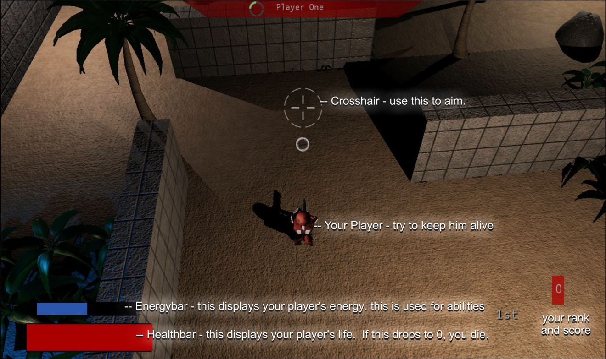
2 / 13
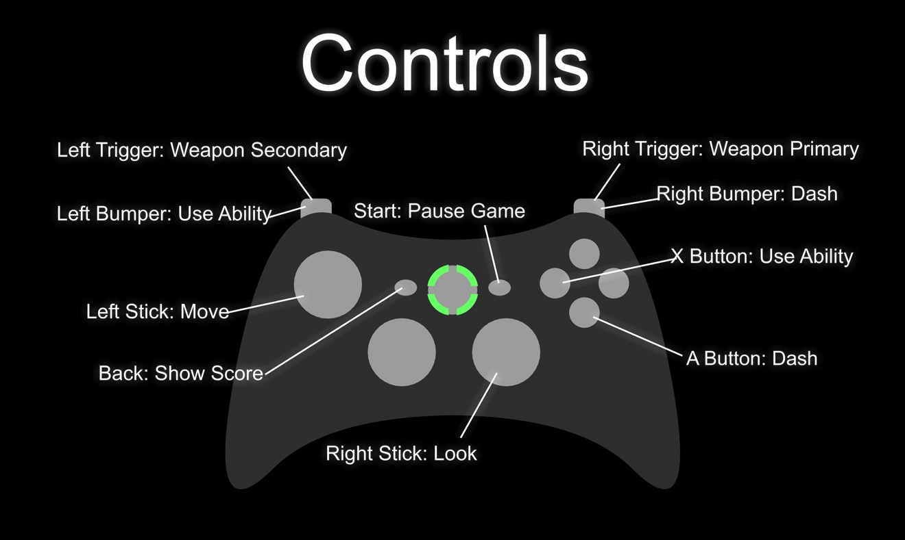
3 / 13
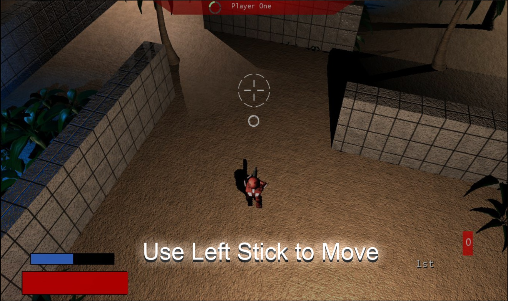
4 / 13
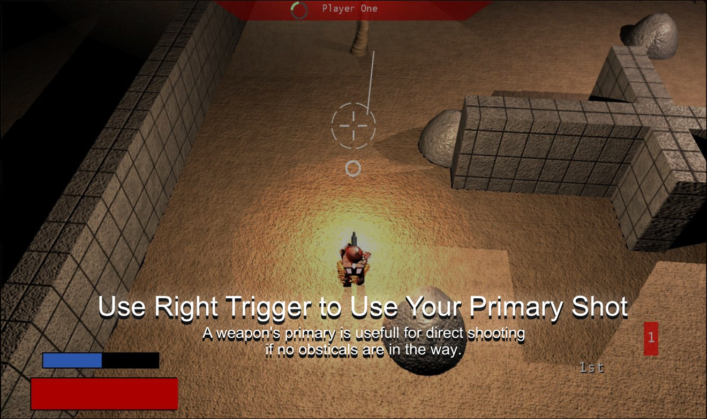
5 / 13
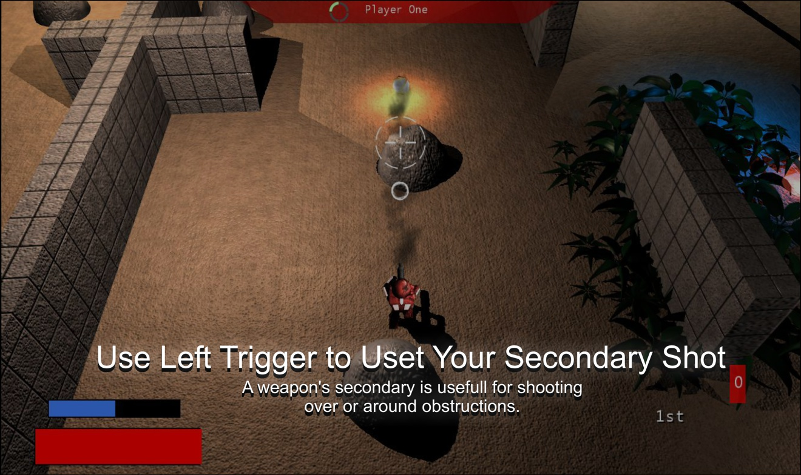
6 / 13
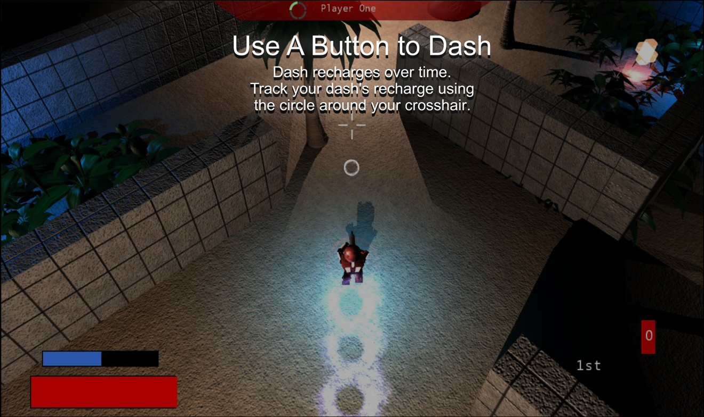
7 / 13

8 / 13
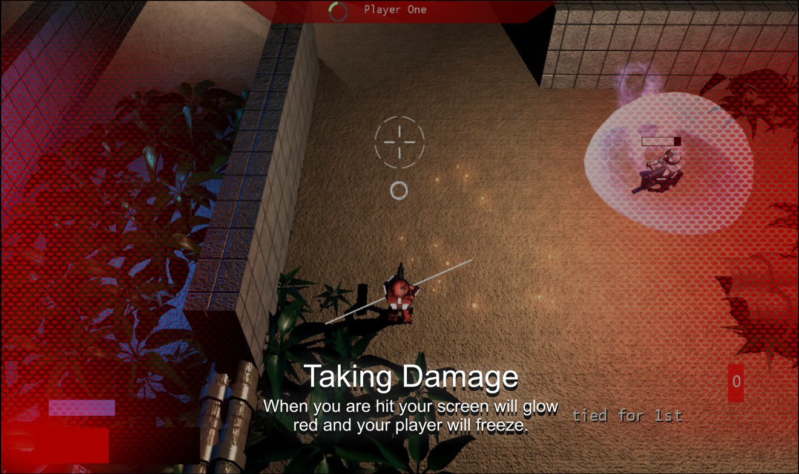
9 / 13
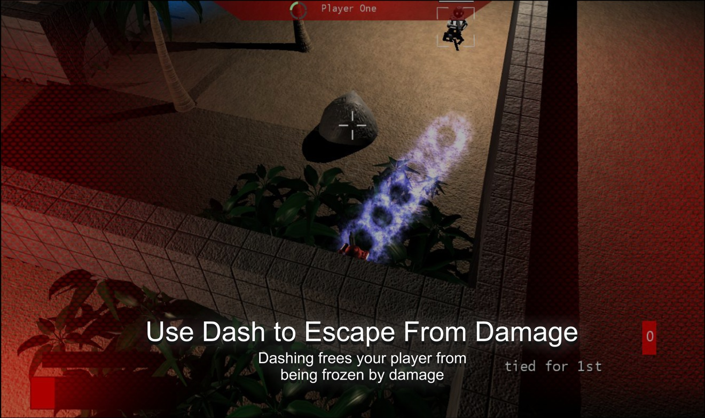
10 / 13
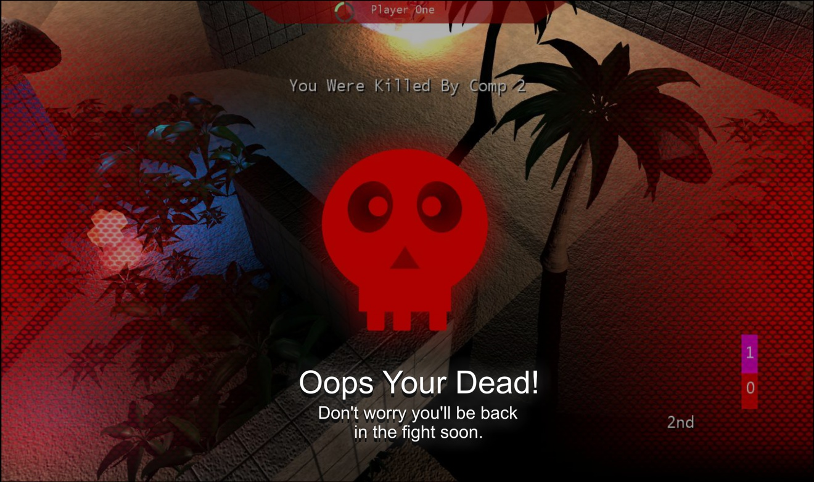
11 / 13
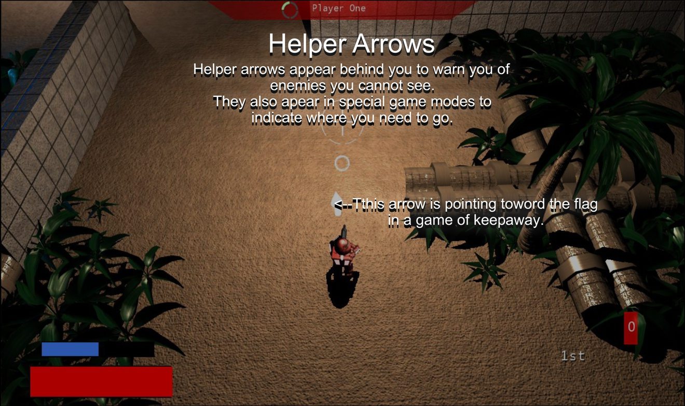
12 / 13
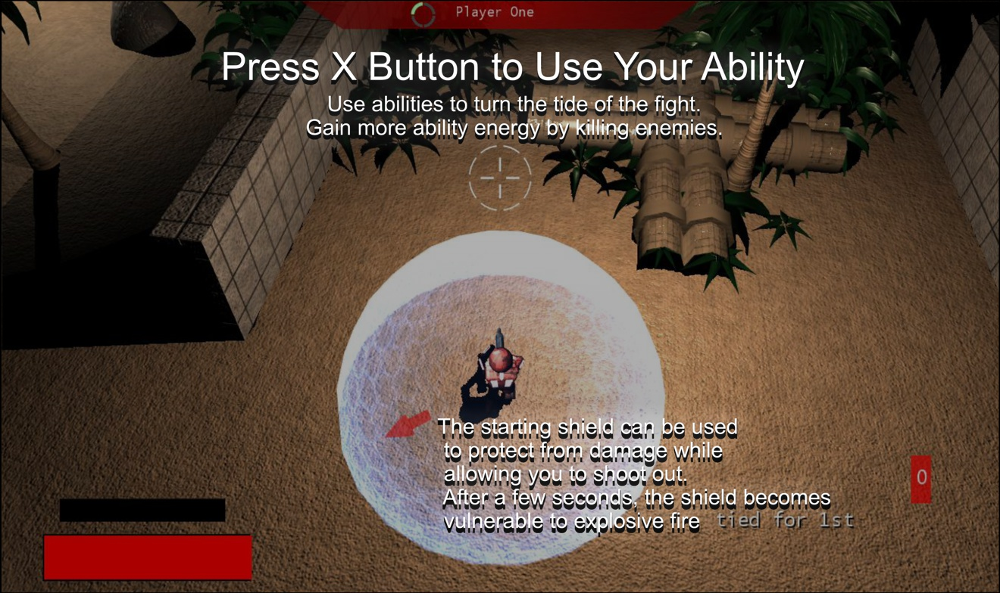
13 / 13
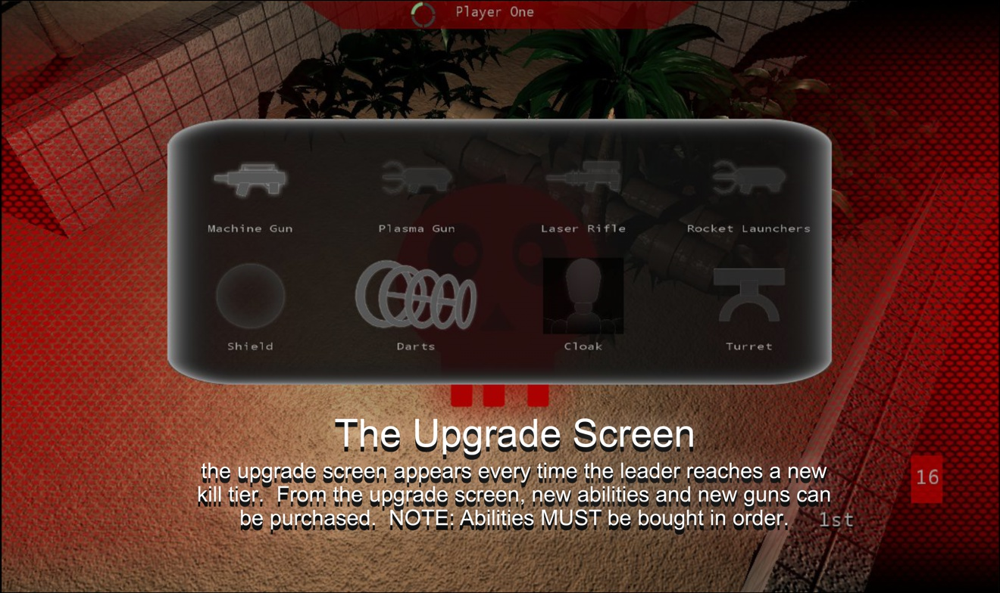
Weapon Types:
- Machine Gun
- Primary Fire: A stream of bullets with low accuracy.
- Alt Fire: A grenade which can arc over small terrain. Explodes after too much time or on contact with an enemy.
|
|
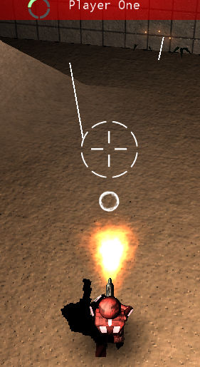 |
- Plasma Gun
- Primary Fire: A stream of plasma with a slow firing rate. Extremely high damage good for close quarters.
- Alt Fire: A grenade which can arc over small terrain. Explodes after too much time. Homes in on enemies during flight and sticks to them until it explodes. If the enemy dashes, the grenade is dropped.
|
|
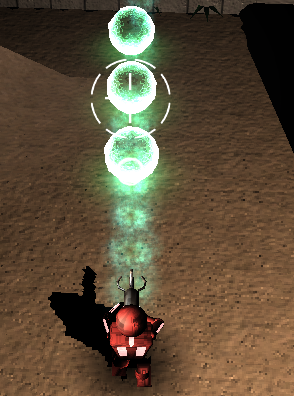 |
- Laser Gun
- Primary Fire: A low rate of fire stream of bullets with high accuracy.
- Alt Fire: A plasma ball which can pass through walls. Explodes after too much time or on contact with an enemy.
|
|
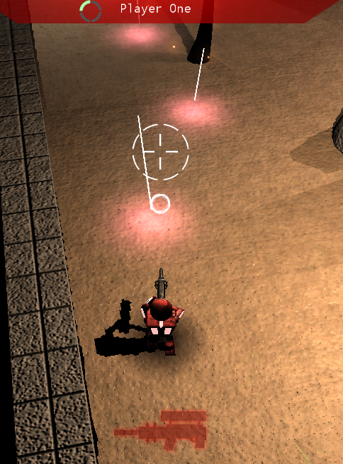 |
- Rocket Launcher
- Primary Fire: 3 rocket bursts which explode on contact with objects or enemies.
- Alt Fire: Fires a number of small flares which home in on nearby enemies. Can pass through walls if timed correctly.
|
|
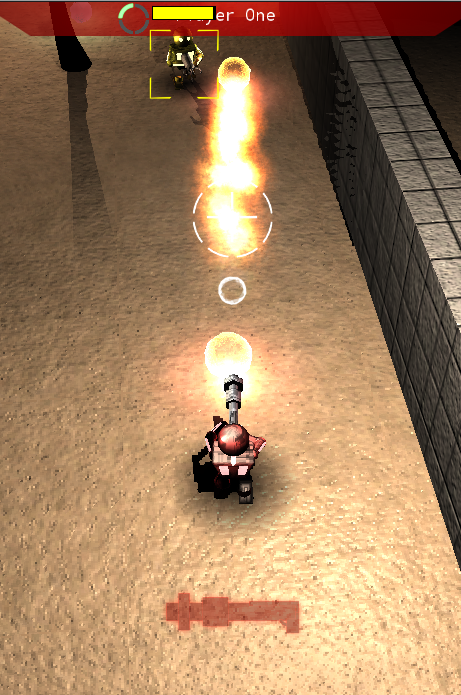 |
Ability Types:
- Shield
- Takes 50 energy. Protects all allies insides the shield for a limited duration. Bullets shot out of the shield fly at faster speeds. Shield disappears after limited time, when shot with an explosive weapon, or when no allies are present. Enemies inside the shield will be pushed out, stunned, and dealt a small amount of damage.
|
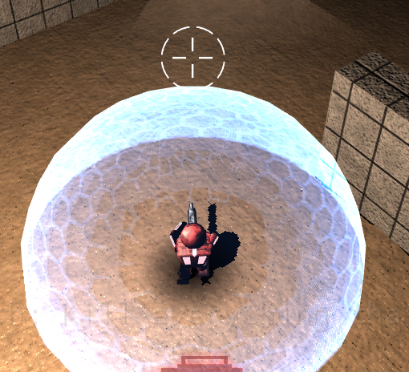 |
|
- Vampire Darts
- Takes 25 energy. Shoots projectiles which expand outward in a V shape while passing through walls. Destroys shields on contact. If an enemy is hit, the enemy will take damage and the shooter will regain some health.
|
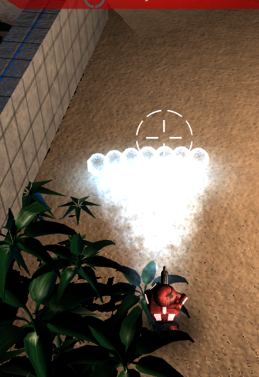 |
|
- Cloak
- Uses energy over time while active. User turns invisible and moves at higher speeds while invisible. User will become visible again temporarily if they dash, shoot or take damage.
|
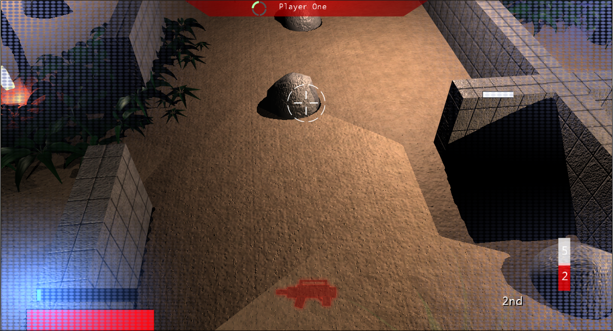 |
|
- Turret
- Takes 25 energy. Turret fires a steady stream of bullets at the nearest enemy. Can be destroyed by an explosive weapon. Destroys self after a short time.
|
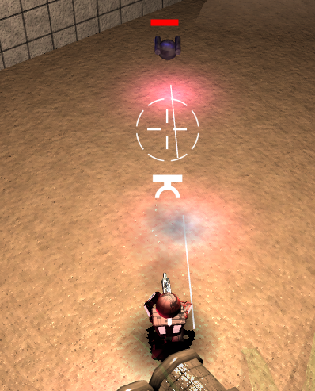 |
|
Game Modes:
- A standard deathmatch. Players get upgrades for weapons or abilities depending on how close the game is to ending. All upgrades are handed out equally and can be used when dead.
- Same as deathmatch but played on teams. Can be played with or without friendly fire.
- One player begins as the loner and all the other players attempt to assassinate him. Assassins get infinite cloak while the loner gets a rocket launcher and health regeneration. If an assassin kills the loner, he becomes the new loner.
- Same as deathmatch but instead of upgrading as the game goes on, players gain upgrades randomly by killing other players. If you kill a player with more upgrades than you, you gain all of that player's upgrades until your next kill. All upgrades resets on death.
- All players start with the highest upgrades. Players lose upgrades randomly by killing and gain upgrades randomly by being killed.
- Players fight over a flag which spawns in the center of the map. Players gain points by holding the flag and gain random upgrades by picking up the flag.

This is the desktop version of this website
You should check this site out on your phone, too.
The mobile version is pretty sweet.
40% nerd
20% artist
20% fitness nut
20% big brother
100% Heart